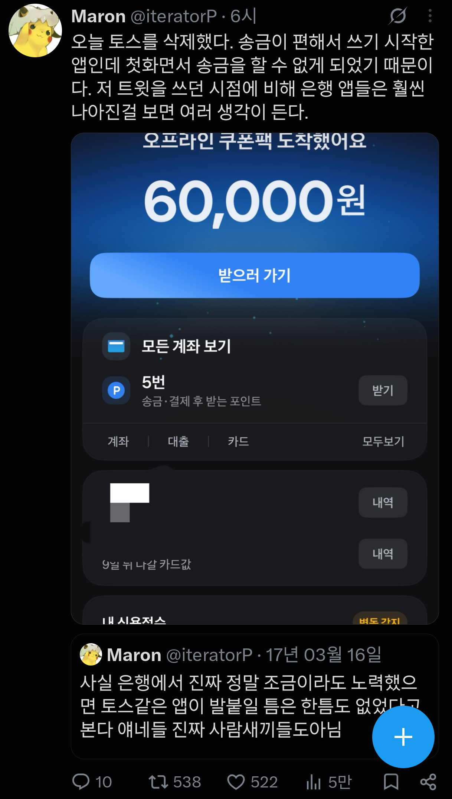

이제 쓸 이유가 없어졌다고 함

이제 쓸 이유가 없어졌다고 함
자녀 주식 계좌굴리는건 토스가 압도적으로 편한듯
방금 테스트 해봤는데, 그래도 토스가 여전히 훨씬 빠르네요.
근데 AI 해킹이 심각한데 괜찮으려나 모르겠어요.
토스보다 빠른 은행 어플도 있습니다
너 ai냐 말투 왜케 ai같냐
ai
사용자 경험을 ui만 단순화 하면 다 용서되는 줄 앎.
ux가 병신그자체고 쓰면 쓸수록 이새끼들은 내가 호구좆병신으로 보이나? 라는 생각이 듬
ㅋㅋ 어플 편의성 때문에 농협계좌 싹다 옮겼으니 다른 어플이 더 편해지면 지금 계좌도 싹다옮길의향있긴함 ㅋㅋ
농협꺼 요즘 많이 좋아짐?
아니 농협 계좌를 우리은행으로 싹다 옮김. 여전히 디지털쓰레기임. 앞으로도 그렇고 절대 나아지지않을것같음 뭐 중앙점이니마니 이지랄하는거 때문에 절대 안나아질듯 ㅋㅋ
nh페이나 이런거 보면 많이 편해지긴 했는데
문제는 중앙회랑 지농이랑은 다른 은행인데
이게 어플 다운받을때 착각할 만하긴해
토스는 송금과 계좌 관리가 편리하고 UI가 깔끔해서 일상적인 금융 업무가 빠르게 처리되는 장점이 있어요. 반면, UX가 직관적이지 않은 부분이 있고, 증권 서비스와 같은 부가 기능이 강제로 연결되어 불편함을 느낄 수 있는 단점도 있습니다.
AI 댓글 좀 쳐내 진짜!
뭐하면 1원씩 주는거 개킹받아서 안함 ㅋㅋㅋㅋ
토스 프라임 페이스페이 쓰면 포인트 ㅈㄴ 마니주는데
페이스페이 진짜 그만좀 띄우면 좋겠음 안한다고 눌렀으면 그만좀 띄워
은행앱은 리뉴얼하니 더 구려졌던데
은행 하나만쓰면 그런데 그거아니면 토스가 편하긴함.
그리고 하루 얼마썼는지 한눈에 보게해주는게 좀 좋긴해
은행어플이랑 토스랑 비교하면 로딩속도부터 차이 심하게 남 토스가 압도적으로 빠름
은행앱 길게 누르면 이체하기 뜨잖아
케이뱅크 앱 괜찮던데.
이상한 과장이 자꾸 뭐 보내서 삭제함
그러게 토스 첨나왔을때만해도 송금할때 토스썼는데 이젠뭐
첫화면 송금 뜨는데...? 지가 계좌 안보이기 설정해놔서 그런거 아님? ㅋㅋㅋㅋ
나도 첫화면 송금 버튼 있는디..
은행앱들이 초기에 기능별로 앱 만드는 미친짓해서 토스가 반사이익 봤는데 막상 토스도 너무 커지니 불편해짐 참 어려워~
토스 깔끔해서 좋았는데 요즘은 이상한거 할인이네 뭐네 쥰내뜨더라
우리은행도 로그인하자마자 첫화면 이체버튼 있긴함.
나도 있는데 왜...? 업데이트하면 없어지나?
토스는 국내 **최대** 규모의 금융 어플리케이션으로, 많은 편리한 점들이 있습니다.
토스결제할때 할인해주는거 있음 쓰는데 그거말곤 안씀 ㅋㅋㅋㅋㅋㅋㅋㅋ